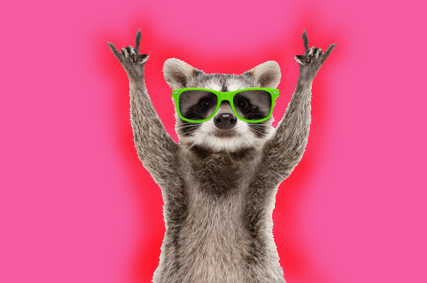
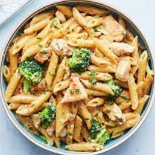

 Welcome!!
My name is Lyric and this is my own corner of the internet, hence the logo name. If you wanna see something freaky, click on the little space icon!
Being that this is MY CORNER, it's all about me! To learn about the images below, hover over them with your tiny arrow. There are other pages detailing more about me, but that for you to explore later. This page is for my basic nonsense.

Lavender is favorite color and has been for many years. I love the lighter purple shades and the plum shades aswell. Deep purples are also quite beautiful on fabrics like satin and mesh. The color in general is very pleasing to see, as well as the pink-ish varients.

My beautiful doggy doggy doo. Jax is half Catahoula and half German Shepard. He's so nice to stranger humans, but mean to stranger animals. Very athletic and a bit too smart for his own good. My cutie puppy is such a good boy (when he wants to be) and I love him so much!! Click him to watch him be a cutie.

Definitly my favorite food and I love the many variations it can come in. Pasta/Noodles are amazing! I love all the amazing noodle based dishes, ranging from Fetuchini to Pad Thai to Udon. It's also and easy meal to create that can change drastically depending on the sauces used. Absolute fav!!

I think you might have guessed this one...I love sweets! Candy, pastries, fruit, you name it! They all really tingle my taste buds!! To be specific, Jellybeans and mango are favs. I would put cookies, but depending on where they're from, some aren't as good as others. I like trying new desserts all the time. I also really love boba drinks!

I'm American and born in Louisiana. I moved to Houston in the 7th grade and haven't left since!
My Birthday is in October, the 18th specifically. I would've been born in November, but thankfully I wasn't. October is definetly my favorite month. Spooky season, fall, and my birthday all in one shows I couldn't have gotten a better month!!